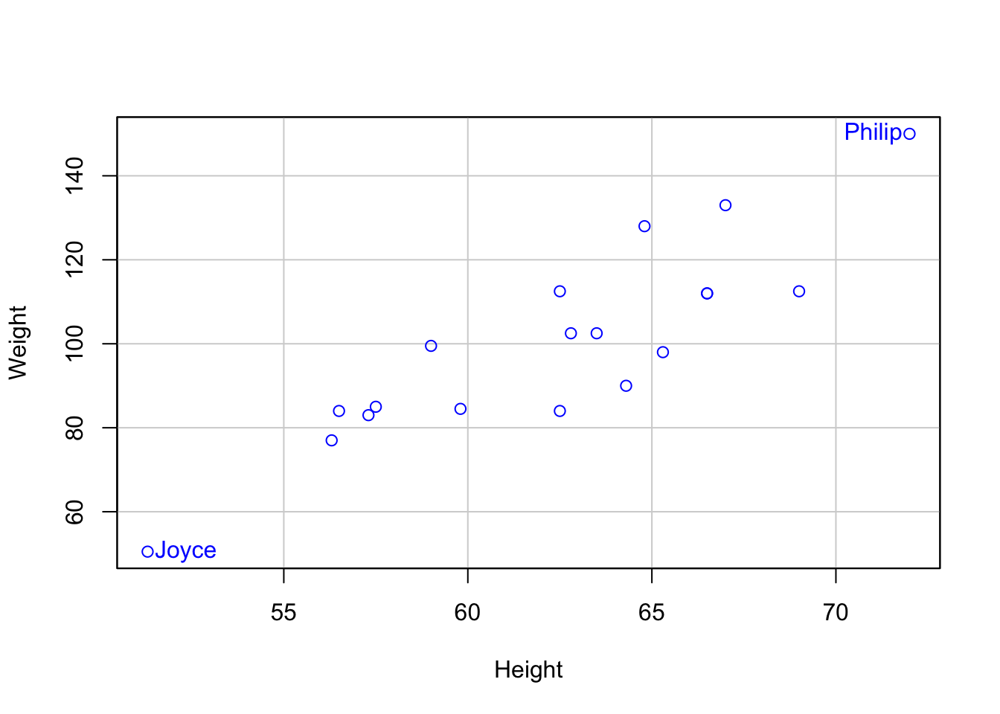
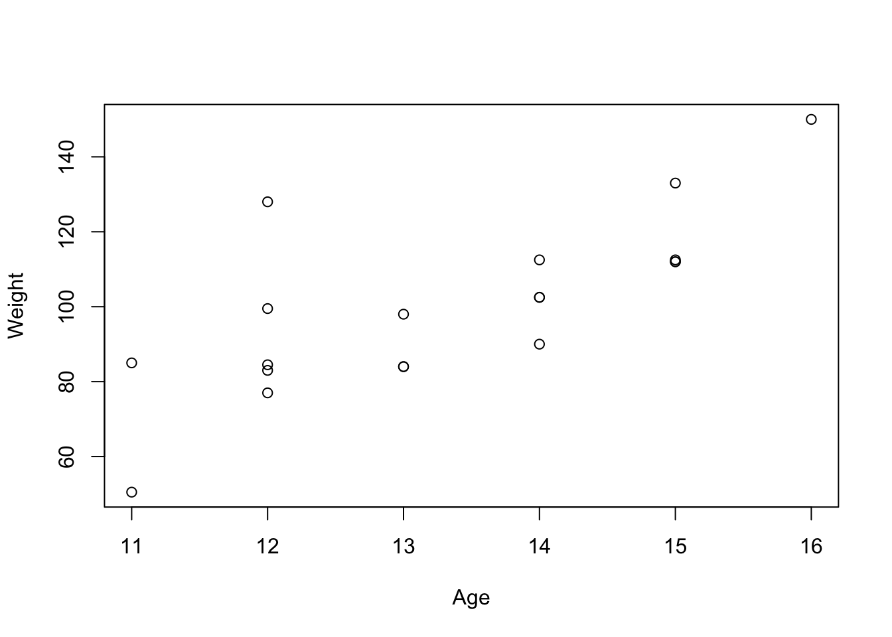
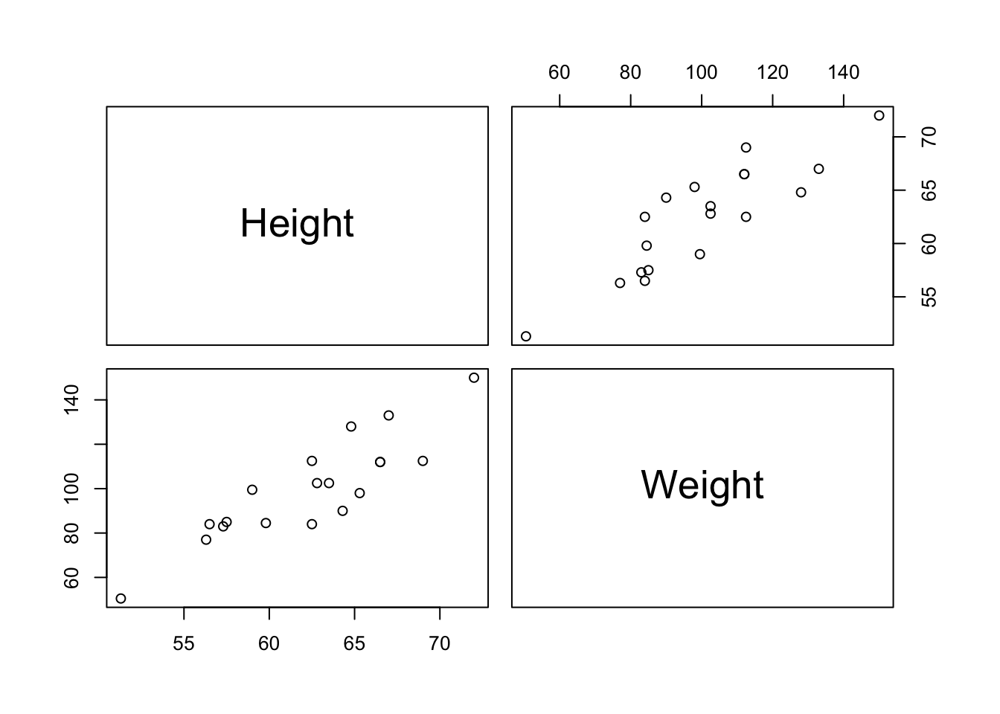

Registered S3 method overwritten by 'mosaic':
method from
fortify.SpatialPolygonsDataFrame ggplot2
The 'mosaic' package masks several functions from core packages in order to add
additional features. The original behavior of these functions should not be affected by this.
Attaching package: 'mosaic'
The following objects are masked from 'package:dplyr':
count, do, tally
The following object is masked from 'package:Matrix':
mean
The following object is masked from 'package:ggplot2':
stat
The following objects are masked from 'package:stats':
binom.test, cor, cor.test, cov, fivenum, IQR, median, prop.test,
quantile, sd, t.test, var
The following objects are masked from 'package:base':
max, mean, min, prod, range, sample, sum
4.1 Assumptions of Linear Models
Linearity - Expected value of the response variable is a linear function of the explanatory variables.
Constant Variance(Homogeneity of variance; Identically distributed) - The variance of the errors is constant across values of the explanatory variables.
Normality - The errors (residuals) are normally distributed, with an expected mean of zero (unbiased).
Independence - The observations are sampled independently (the residuals are independent).
No measurement error in predictors - The predictors are measured without error. THIS IS AN IMPORTANT AND ALMOST ALWAYS VIOLATED ASSUMPTION.
Predictors are not Invariant - No predictor is constant.
'data.frame': 19 obs. of 5 variables:
$ Name : chr "Alfred" "Antonia" "Barbara" "Camella" ...
$ Sex : chr "M" "F" "F" "F" ...
$ Age : int 14 13 13 14 14 12 12 15 13 12 ...
$ Height: num 69 56.5 65.3 62.8 63.5 57.3 59.8 62.5 62.5 59 ...
$ Weight: num 112 84 98 102 102 ...
5.2 Look at some of the data
library(psych)headTail(mswt) # in the psych package
Name Sex Age Height Weight
1 Alfred M 14 69 112.5
2 Antonia F 13 56.5 84
3 Barbara F 13 65.3 98
4 Camella F 14 62.8 102.5
... <NA> <NA> ... ... ...
16 Robert M 12 64.8 128
17 Sequan M 15 67 133
18 Thomas M 11 57.5 85
19 William M 15 66.5 112
5.3 Visualizing Weight versus Height
library(car)scatterplot(Weight ~ Height, data = mswt, regLine =FALSE, smooth =FALSE, id =list(labels = mswt$Name, n =2),boxplots =FALSE)

Joyce Philip
11 15
5.4 Visualizing Weight and Age
plot(Weight ~ Age, mswt)

5.5 Scatterplot Matrix
pairs(mswt[ ,-(1:3)])

5.6 Descriptive Statistics
describe(mswt[ ,-(1:2)])
vars n mean sd median trimmed mad min max range skew kurtosis
Age 1 19 13.32 1.49 13.0 13.29 1.48 11.0 16 5.0 0.05 -1.33
Height 2 19 62.34 5.13 62.8 62.42 5.49 51.3 72 20.7 -0.22 -0.67
Weight 3 19 100.03 22.77 99.5 100.00 21.50 50.5 150 99.5 0.16 -0.11
se
Age 0.34
Height 1.18
Weight 5.22
5.7 Empty Model of Weight
mod0 <-lm(Weight ~1, data = mswt)summary(mod0)
Call:
lm(formula = Weight ~ 1, data = mswt)
Residuals:
Min 1Q Median 3Q Max
-49.526 -15.776 -0.526 12.224 49.974
Coefficients:
Estimate Std. Error t value Pr(>|t|)
(Intercept) 100.026 5.225 19.14 2.05e-13 ***
---
Signif. codes: 0 '***' 0.001 '**' 0.01 '*' 0.05 '.' 0.1 ' ' 1
Residual standard error: 22.77 on 18 degrees of freedom
5.8 Model of Weight on Age
mod.height <-lm(Weight ~ Age, data = mswt)summary(mod.height)
Call:
lm(formula = Weight ~ Age, data = mswt)
Residuals:
Min 1Q Median 3Q Max
-23.349 -7.609 -5.260 7.945 42.847
Coefficients:
Estimate Std. Error t value Pr(>|t|)
(Intercept) -50.493 33.290 -1.517 0.147706
Age 11.304 2.485 4.548 0.000285 ***
---
Signif. codes: 0 '***' 0.001 '**' 0.01 '*' 0.05 '.' 0.1 ' ' 1
Residual standard error: 15.74 on 17 degrees of freedom
Multiple R-squared: 0.5489, Adjusted R-squared: 0.5224
F-statistic: 20.69 on 1 and 17 DF, p-value: 0.0002848
5.9 Centering the Predictor
mswt$cAge <- mswt$Age -mean(mswt$Age)mod.cage <-lm(Weight ~ cAge, data = mswt)summary(mod.cage)
Call:
lm(formula = Weight ~ cAge, data = mswt)
Residuals:
Min 1Q Median 3Q Max
-23.349 -7.609 -5.260 7.945 42.847
Coefficients:
Estimate Std. Error t value Pr(>|t|)
(Intercept) 100.026 3.611 27.702 1.38e-15 ***
cAge 11.304 2.485 4.548 0.000285 ***
---
Signif. codes: 0 '***' 0.001 '**' 0.01 '*' 0.05 '.' 0.1 ' ' 1
Residual standard error: 15.74 on 17 degrees of freedom
Multiple R-squared: 0.5489, Adjusted R-squared: 0.5224
F-statistic: 20.69 on 1 and 17 DF, p-value: 0.0002848
6 Exercise Example
6.1 Exercise Data
wtloss - Average weekly weight loss
food - average daily caloric intake above minimum 1000, in 100s of calories
exercise - average weekly hours of exercise
What relation should we expect between amount of food consumed and weight loss?
6.2 Exercise Data
library(dplyr)library(ggplot2)library(knitr)# Set ggplot default font sizetheme_update(text =element_text(size =18))tsize =30options(scipen=5)exercise <-read.csv("data/exercise.csv", header =TRUE)exer <- exercise %>%select(exercise, food, wtloss)exer <-as.data.frame(exer)kable(exer)
6.4 Correlations Between Predictors (APA style table)
library(apaTables)library(kableExtra)tab <-apa.cor.table(exer, )kable(tab[[3]], justify ='left', caption ="Table 1: Means, standard deviations, and correlations with confidence intervals") %>%add_footnote("Note. M and SD are used to represent mean and standard deviation, respectively. Values in square brackets indicate the 95% confidence interval. The confidence interval is a plausible range of population correlations that could have caused the sample correlation (Cumming, 2014). \n\n* indicates p < .05. ** indicates p < .01.",notation ="none", threeparttable =TRUE )
Table 1: Means, standard deviations, and correlations with confidence intervals
Variable
M
SD
1
2
1. exercise
2.00
1.63
2. food
5.00
2.16
.38
[-.33, .81]
3. wtloss
7.50
3.31
.86**
.05
[.51, .97]
[-.60, .66]
Note. M and SD are used to represent mean and standard deviation, respectively. Values in square brackets indicate the 95% confidence interval. The confidence interval is a plausible range of population correlations that could have caused the sample correlation (Cumming, 2014).
* indicates p < .05. ** indicates p < .01.
6.4.1 The Effect of Food Intake on Weight Loss is Confounded by Exercise
to find \(b_k\) (i.e., \(b_1, b_2, \dots, b_k\)) so that \(\Sigma{e^2}\) [i.e. \(\Sigma (Y - \hat{Y})^2\)] is minimal (least squares principle).
6.6 Four Reasons for Conducting Multiple Regression Analysis
To explain how much variance in \(Y\) can be accounted for by \(X_1\) and \(X_2\). For example, how much variation in Reading Achievement ( \(Y\) ) can be accounted for by Verbal Aptitude( \(X_1\) ) and Achievement Motivation ( \(X_2\) )?
To test whether the obtained sample regression coefficients (\(b_1\) an \(b_2\)) are statistically different from zero. For example, is it reasonable that these sample coefficients have occurred due to sampling error alone (“by chance”)?
Illustration of an added independent variable ( \(X_3\) ) explains additional variance in \(Y\) above the other regressors.
To evaluate the relative importance of the independent variables in explaining variation in \(Y\).
6.7 Obtaining Simple and Multiple Regression Models
Give this a try
6.7.1 R code
exercise <-read.csv("data/exercise.csv", header =TRUE)mod_exer <-lm(wtloss ~ exercise, data = exercise)mod_food <-lm(wtloss ~ food, data = exercise)mod_exer_food <-lm(wtloss ~ exercise + food, data = exercise)
6.8 Comparing Simple and Multiple Regression Models
6.8.1 Raw Regression Coefficients ( \(b\)s ) vs Standardized Regression Coefficients ( \(\beta\)s )
As if things were not confusing enough, \(\beta\), in addition to representing the population parameter, is also often used to represent the standardized regression coefficient
6.9 Relationship Between \(b\) and \(\beta\)
\(b_k = \beta_k \frac{s_y}{s_k}\), where \(k\) indicates the \(k\)th IV \(X_k\) and \(s\) is the standard deviation.
6.15 Multiple Regression with correlated predictors
When independent variables are correlated, it is possible that:
the test of the overall model (test of \(R^2\)) is statistically significant and practically meaningful, but NONE of the individual regression coefficients are statistically significant (a seemingly contradictory finding).
a statistically non-significant \(b_k\) does not necessarily mean that the variable \(X_k\) is NOT a meaningful predictor of \(Y\) by itself. As a matter of fact, \(X_k\) may be correlated substantially with \(Y\) and by itself, may account for substantial variance in \(Y\).
when \(r_{12} = 0\): \(R^2 = r^2_{y1} + r^2_{y2}\)
6.17 Tests of Significance and Interpretation
6.17.1 Test of \(R^2\)
\[F_{(df1, df2)} = \frac{R^2/k}{(1 - R^2)/(N - k - 1)}, \quad df_1 = k, df_2 = N - k - 1.\]
6.17.2 Test of \(SS_{reg}\)
\[F_{(df1, df2)} = \frac{SS_{reg}/k}{SS_{error}/(N - k - 1)}, \quad df_1 = k, df_2 = N - k - 1.\]
6.18 Tests of Significance and Interpretation
in simple regression analysis, test for the only regression coefficient \(b\) is the same as the test of \(R^2\) and the same as test of \(SS_{reg}\).
in multiple regression analysis, test of \(R^2\) and test of \(SS_{reg}\) is a test of all regression coefficients simultaneously.
in multiple regression analysis, the test of individual regression coefficient \(b_k\) is testing the unique contribution of \(X_k\), given all other independent variables are already in the model (contribution of \(X_k\) over and beyond other independent variables).
6.19 Relative Importance of Predictors
the magnitude of \(b_k\) is affected by the scale of measurement
NOT ideal for inferring substantive or statistical meaningfulness
NOT ideal for inferring relative importance across variables in model
for different populations, can be used for assessing the importance of the same variable across populations.
\(\beta\) is on a standardized scale (in standard deviation units: a \(z\) score)
better for assessing relative importance across variables in model (though we will find that there are problems with this)
magnitude impacted by group \(s\), thus less suitable for comparisons across populations.